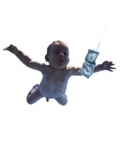
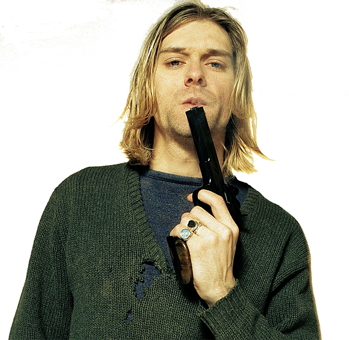
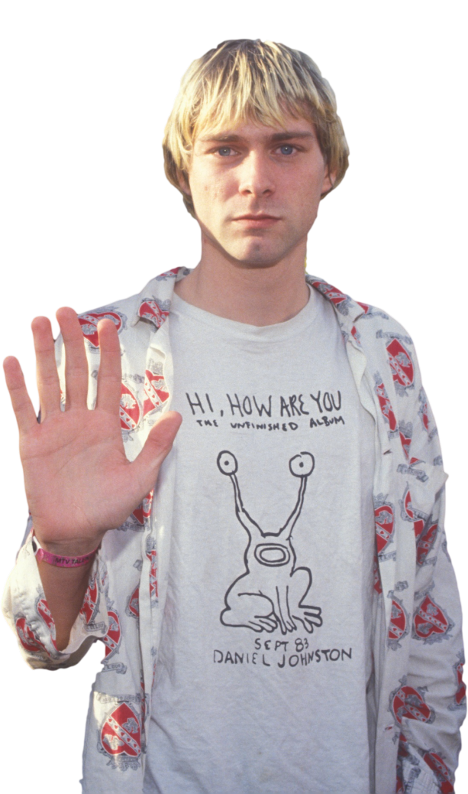
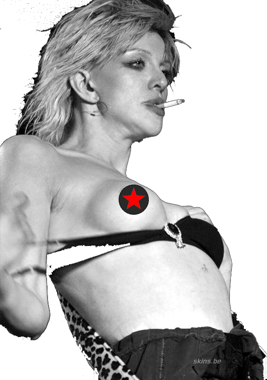
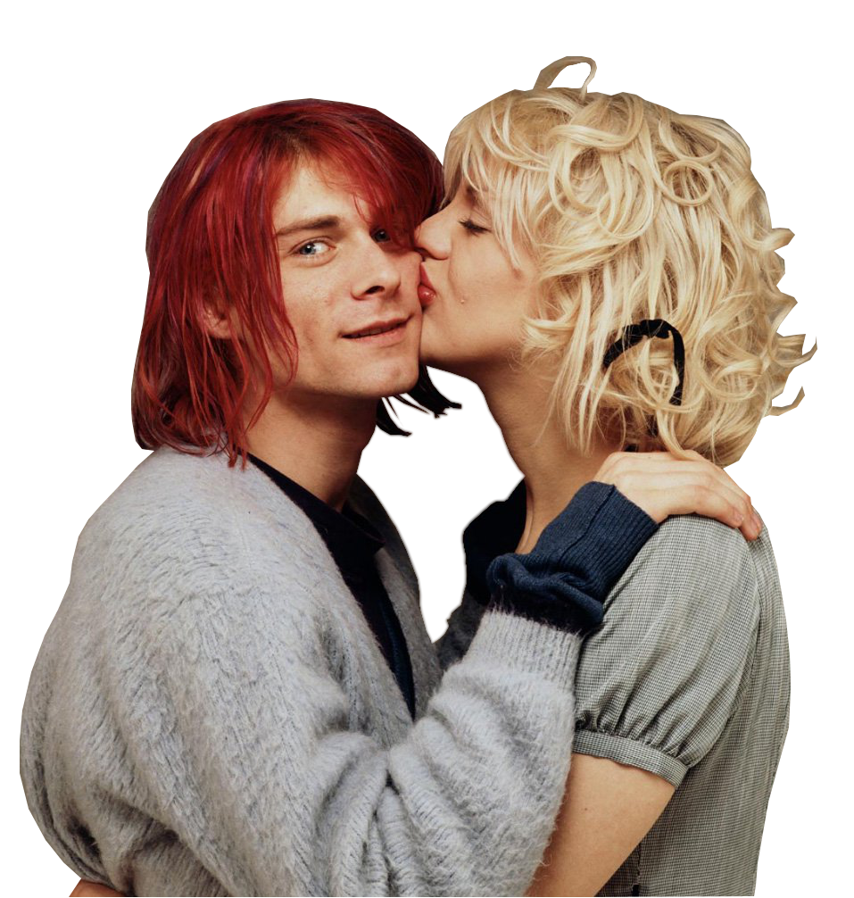
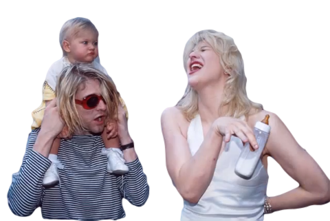
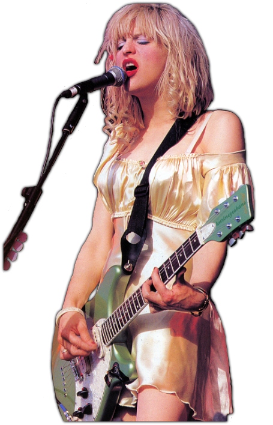

Kurt Cobain was born at Grays Harbor Hospital in Aberdeen, Washington,to a waitress, Wendy Elizabeth and an automotive mechanic, Donald Leland Cobain.
Courtney Love was born in 1964 and spent her early years in the Haight-Ashbury district of San Francisco until her parents' 1969 divorce, after which her father's custody was withdrawn when her mother alleged that he had fed LSD to Love as a toddler.
When Cobain was nine years old, his parents divorced. He later said that the divorce had a profound effect on his life, while his mother noted that his personality changed dramatically; Cobain became defiant and withdrawn.
In 1977, Love's mother divorced, remarried, and moved the family to New Zealand; there, she enrolled Love at Nelson College for Girls, from which Love was eventually expelled.
On his 14th birthday on February 20, 1981, Cobain's uncle offered him either a bike or a used guitar—he chose the guitar. Soon, he was mastering Led Zeppelin's power ballad, "Stairway to Heaven". "Louie Louie" and The Cars' "My Best Friend's Girl" were other cover versions learnt by Cobain before he began working on his own songs.
Love initially began several music projects in the 1980s, first forming Sugar Babylon in Portland with friends Ursula Wehr and Robin Barbur. The band moved to New York.
Nirvana recorded the album Bleach, released on Sub Pop Records in 1989. Cobain, however, became dissatisfied with current drummer Chad Channings style, leading the band to find a new drummer, and they eventually settled on David Grohl.
In 1989, Love aborted her music career and left New York, returning to the west coast, citing the "celebutante" fame she'd attained as the central reason. "I hated it," she recalled. "It was misery itself. She returned to stripping in the small town of McMinnville, Oregon.
Kurt Cobain meets Courtney Love at a Nirvana show.
In the weeks that followed, after learning from Grohl that Cobain shared mutual interests with her, Love began pursuing Cobain. In late 1991, the two were often together and bonded through drug use.
On February 24, 1992, a few days after the conclusion of Nirvana's "Pacific Rim" tour, Cobain and Love were married on Waikiki Beach in Hawaii. Love wore a satin and lace dress once owned by Francis Farmer, and Cobain donned a Guatemalan purse and wore green pajamas, because he had been "too lazy to put on a tux".
Love was already pregnant with the couple's first daughter. Frances Bean Cobain was born August 18, 1992. A sonogram of the couple's as-yet-unborn baby was included in the artwork for Nirvana's "Lithium" single.
On April 8, 1994 Cobain's body was discovered at his Lake Washington Boulevard home by an electrician named Gary Smith who had arrived to install a security system. Drummer David Grohl would say that the news of Cobain's death was: “ ... probably the worst thing that has happened to me in my life."
After a tremendous legal battle over the rights to Nirvana‘s music, the band’s surviving members seemed to put their feud with Love to rest during Nirvana’s induction into the Rock and Roll Hall of Fame.
